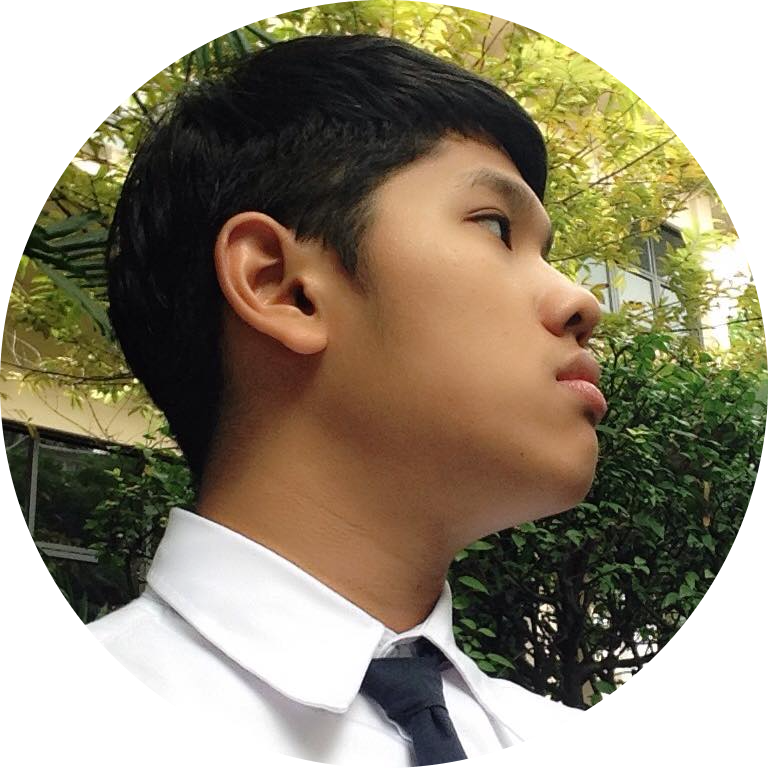

After I graduated from one of the most prestigious universities in Thailand and acquired my engineering degree, I came to Japan in 2019 and worked as a full-stack engineer to create enterprise web applications. I’m currently creating games with Unity as a hobby and would love for an opportunity to apply my experience from both web and game development to work in the game industry as a professional game developer.
タイの名門大学から通信情報工学部を卒業後、2019年に日本に来てウェブエンジニアとしてフルスタックウェブ開発のプロジェクトに携わってきました。現在は趣味としてUnityでゲーム開発を行っています。機会があれば、これまでの開発経験を活かしてゲーム業界で働いてプロとしてゲームを作ってみたいと思っています。
Project Name / プロジェクト名
Blobfish Caretaking Game
ブロブフィッシュ育成ゲーム
Project Content / プロジェクト内容
A game where you become the caretaker of the undersea creature “blobfish”. The blobfish will swim around and look for food from time to time. Eating trash will decrease its health point and may result in a game over while eating natural food will recover its health point and make it grow up. Player has to get rid of the trash on the screen by touching it so that the blobfish will only eat good food and get bigger.
海底生物「ブロブフィッシュ」の育成ゲームです。ブロブフィッシュはプレイエリアの中を泳ぎ回って時々お腹が空いてランダムに生成されたアイテムを食べます。ゴミを食べたらライフポイントが下がって、０になったらゲーム終了します。逆に自然から食べ物を食べたらライフポイントを回復して成長します。プレイヤーはスクリーン上のアイテムを触ったらそのアイテムがなくなりますので、ブロブフィッシュを成長させるためにゴミを出しましょう。
About the Development / 開発について
This game was created by a team of 2 people during our free time. My friend designed and created art assets while I was in charge of game design and programming. I want to learn about creating a movement for the NPC so I designed the game to have the character decide what to do by itself. For the item spawning system, I implemented a design pattern called object pool to recycle the game objects within the scene instead of destroying game objects.
暇な時に２人でこのゲームを開発しました。別のメンバーはスプライトなどアートアセットのデザインと作成を担当して、私はゲームデザインとUnityでコーディングを担当していました。NPCの動きを学びたいと思ってキャラクターは自分の動きを自分で決めるようにデザインしました。アイテムのスポーンシステムは毎回新しいオブジェクトを生成して破壊する代わりにObjectPoolパターンというデザインパターンを使ってオブジェクトリサイクル機能を実施しました。
Technology / 技術
Unity, C#
Source Code / ソースコード
https://github.com/chul39/project-blobfish
Project Name / プロジェクト名
Running game with rhythm-based level generation system
音楽でレベルを自動生成できるランナーゲーム
Project Content / プロジェクト内容
A game where players can import external music files into the game and let it generate game stages automatically based on them. The game requires the player to avoid getting hit by the obstacles while collecting the items which will be placed according to the beat of the imported song. The game level is generated by sampling the audio to get its spectrum data and then the pattern is determined by the frequency level of the audio wave.
プレイヤーは音楽ファイルをゲームにインポートしてそのファイルに基づいて自動的にゲームレベルが生成されます。ゲームプレイは障害物をかわしながら音楽のビートに合わせて配置されたアイテムを集めていきます。ゲームレベルを生成するには音楽ファイルからスペクトルデータを取得して音波の周波数によってステージのパターンを決めています。
About the Development / 開発について
During my last year in university, I thought that it would be fun to play a runner game while listening to my favorite songs so I created this game as my senior project. From this project, I’ve learnt many things such as Unity’s audio system, resources loading on runtime, and how to handle data between scenes by using singleton.
大学時代に好きな曲を聴きながらランナーゲームをやるのは楽しそうと思って卒業制作としてこのゲームを作っていました。このプロジェクトのおかけでUnityのAudioSystemをよく勉強しました。それ以上に、プレイ中にリソースロードする方法やSingletonを使ってシーンをまたいで値を保持する方法などの知識を得ました。
Technology / 技術
Unity, C#
Source Code / ソースコード
https://github.com/chul39/rhythm-runner
Project Name / プロジェクト名
Yacht (Clone game)
ヨット（クローンゲーム）
Project Content / プロジェクト内容
A clone game of the board game “Yacht”. It can be simply explained as the game where players have to roll 5 dice each time to create a certain combination for the score, and the player with the highest score will win the game. The score will be calculated and kept track of by the system so players can focus more on the game.
ヨットというボードゲームのクローンゲームです。このゲームのルールを簡単に説明すると、プレイヤーは5つのサイコロを振って役を作って得点を得て、より高得点を得たプレイヤーが勝ちとなります。スコア計算や合算はシステムの処理にしましたので、勝の勝負に徹することができます。
About the Development / 開発について
I was watching my favorite streamer playing this game and thought that it looked very interesting so I tried to make a clone version of it. From this project, I’ve learnt many things such as the turn-base system and 3D physics. I’m currently planning to add a network system in the future to support online multiplayer.
推し配信者からこのゲームについて知って、楽しそうと思ってクローンゲームを作ってみました。このプロジェクトを開発してターンベースシステムや3次元の物理をよく勉強しました。マルチプレイヤーをサポートしたいと思って、今はネットワークシステムを追加することを考えています。
Technology / 技術
Unity, C#
Source Code / ソースコード
https://github.com/chul39/yacht-dice-game
Project Name / プロジェクト名
Web Application for Admission
入学用ウェブアプリケーション
Project Content / プロジェクト内容
I was responsible for the front-end development of the interview management application, which was used during the interview day to display the list of applicants according to their score and the remaining seats for each program on a big screen in the waiting room. I also created the management page in which the interviewee can check the applicant's information using the personal computer during the interview and then update the database through this application. Because of this application, the flow of the admission procedure became significantly smoother.
私はフロントエンド開発を担当していて入試面接管理ウェブアプリケーションのクライアントサイドを開発しました。入試面接の当日に面接官はこのアプリケーションを利用して待合室のモニターに試験成績順の受験者一覧と各学科の残席数を表示し、応募者を一人ずつ呼んで入試面接を行っていました。その後、面接官はパソコンの上で応募者の情報を確認して入試面接の結果を決定できます。このアプリケーションのおかけでISEの入学応募処理は以前より格段にスムーズになりました。
About the Development / 開発について
During my 2nd year in the university, I teamed up with 6 other students to help International School of Engineering, Chulalongkorn University to create web applications for online enrollment and interview management. As this was the first time my project has been used in a real situation, I’ve learned to create an application according to my client’s requirement and also how to work in a team.
大学2年生の時にチュラーロンコーン大学の工学部からISE(International School of Engineering)の入学用システム開発を依頼され、6人の同級生とチームを組んで入学応募用と入試面接管理用のウェブアプリケーションを作りました。これは初めての実績で使われるプロジェクトなので、クライアントの仕様によって開発方法やチームでの働き方を勉強しました。
Technology / 技術
HTML, CSS, Javascript, Angular.js